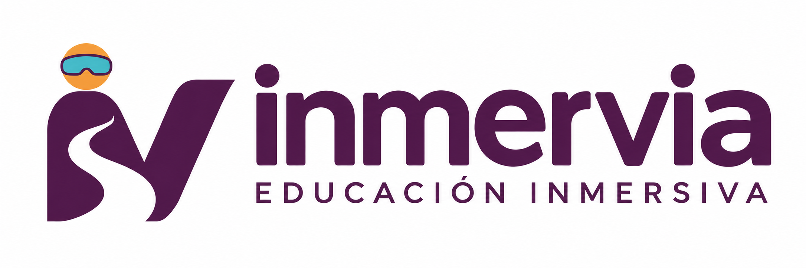
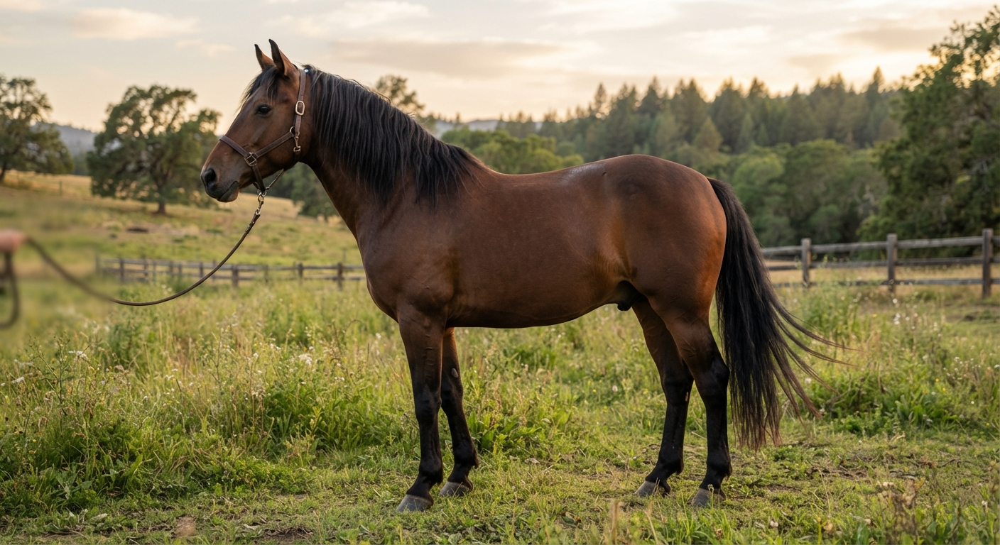

Equus caballus
Arrastra una pieza. Al acercarla a su lugar, encajará.
En computador: arrastra el fondo para girar, usa la rueda para acercarte y haz clic en una región. En «Montar piezas», arrastra directamente las piezas.
En Meta Quest: abre este enlace desde el navegador de las gafas y pulsa «Entrar en realidad mixta». Apunta con el mando y pulsa el gatillo para seleccionar o usar el panel. En montaje, mantén pulsado el botón de agarre para mover una pieza y suéltalo para encajarla.
En el panel de las gafas: puedes cambiar de animal, de modo, seleccionar regiones, ajustar el movimiento, separar piezas, restaurar el modelo, cambiar el tamaño y reubicarlo.
Esta demostración contiene la superficie externa y un rig de animación. No incorpora huesos, músculos u órganos anatómicos independientes. Los movimientos y límites requieren validación docente.

Imagen proporcionada por Daniel. El modelo 3D es una base adaptada, no una reconstrucción exacta de este ejemplar.